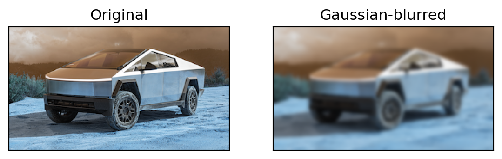
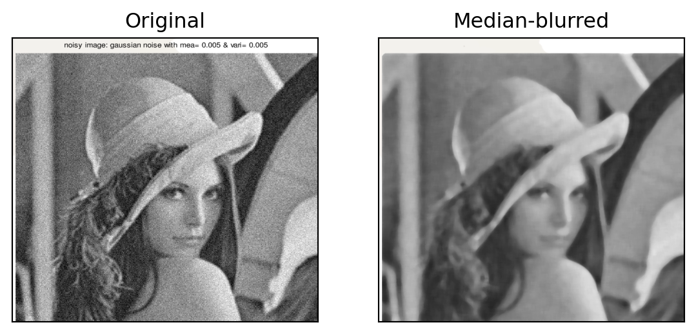
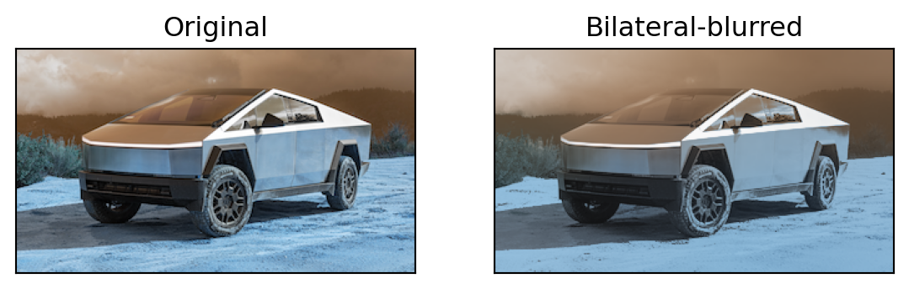

import cv2 as cv
import numpy as np
from matplotlib import pyplot as plt
img = cv.imread('img/cybertruck.png')
assert img is not None, "file could not be read, check with os.path.exists()"
blur = cv.blur(img,(15,15))
plt.subplot(121),plt.imshow(img),plt.title('Original')
plt.xticks([]), plt.yticks([])
plt.subplot(122),plt.imshow(blur),plt.title('Blurred')
plt.xticks([]), plt.yticks([])
plt.show()Lab 5: Image derivatives
Guide
Blur
Smoothing (blur) is a low-pass filter:
- it filters out the “high frequency” part of the image
- helps in removing noise
Normalized box filter
Gaussian filter
Important
Both width and height of the kernel should be odd
gblur = cv.GaussianBlur(img,(15,15),0)
plt.subplot(121),plt.imshow(img),plt.title('Original')
plt.xticks([]), plt.yticks([])
plt.subplot(122),plt.imshow(gblur),plt.title('Gaussian-blurred')
plt.xticks([]), plt.yticks([])
plt.show()
Median blur
Used for noise reduction.
noisy_img = cv.imread('img/noisy_image.png')
median = cv.medianBlur(noisy_img,15)
plt.subplot(121),plt.imshow(noisy_img),plt.title('Original')
plt.xticks([]), plt.yticks([])
plt.subplot(122),plt.imshow(median),plt.title('Median-blurred')
plt.xticks([]), plt.yticks([])
plt.show()
Bilateral blur
Where d is Diameter of each pixel neighborhood that is used during filtering. If it is non-positive, it is computed from sigmaSpace. - used for noise removal - keeps edges sharp
Parameters:
d: diameter of each pixel neighborhoodsigmaColoris used to filter sigma in the color space.sigmaSpaceis used to Filter sigma in the coordinate space
bilateral_blur = cv.bilateralFilter(img,90,75,75)
plt.subplot(121),plt.imshow(img),plt.title('Original')
plt.xticks([]), plt.yticks([])
plt.subplot(122),plt.imshow(bilateral_blur),plt.title('Bilateral-blurred')
plt.xticks([]), plt.yticks([])
plt.show()